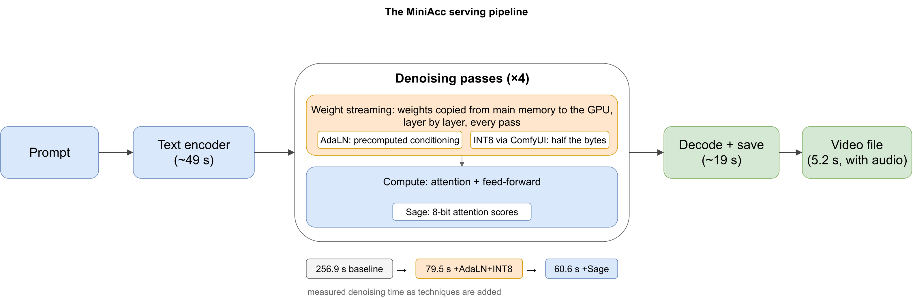
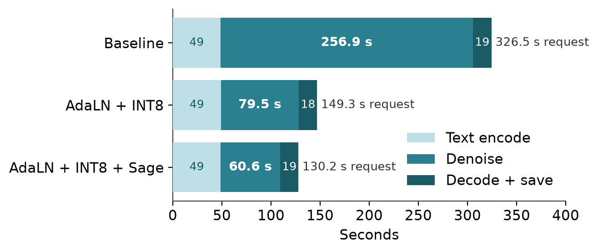
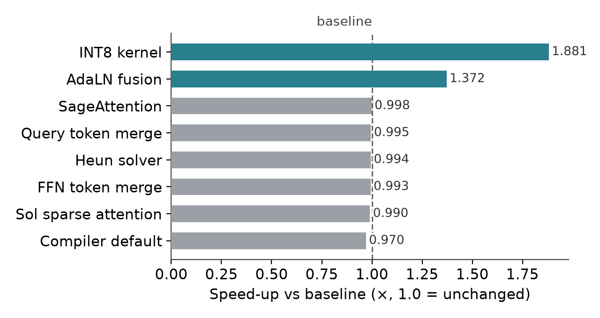
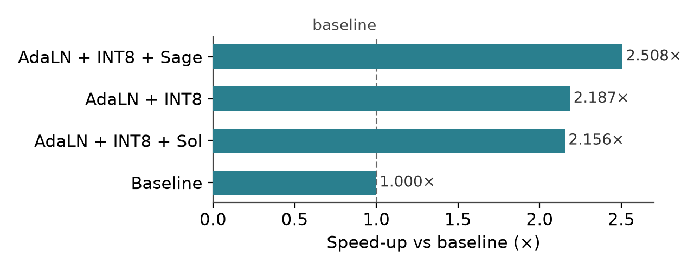
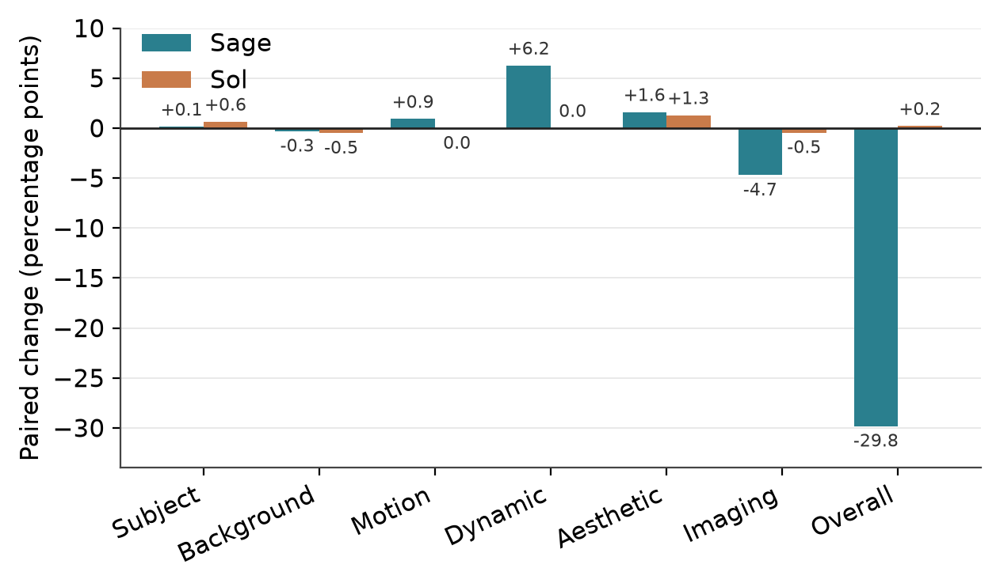

MiniMax-H3 turns a text prompt into a five-second video with synchronised audio, but the model is far too large to keep on one graphics card. Every request therefore shuttles its weights from main memory to the GPU, layer by layer. This project measures where the time actually goes in that setting and asks how much faster the model can be served under a strict budget: one RTX 4090, no training compute, no extra hardware.
We evaluated nine published acceleration techniques one at a time on a frozen workload, with paired video-quality scoring throughout. Only the two techniques that reduced data movement helped: precomputing per-layer conditioning values (an AdaLN sidecar) and storing weights as 8-bit integers via ComfyKitchen's INT8 kernel. Every compute-side technique, including sparse attention and 8-bit attention, measured no gain on its own.
Combining the two winners gives a 2.19× speedup with output we cannot distinguish from baseline on our metrics. Once the copying cost is removed, 8-bit attention (SageAttention) starts to pay, reaching 2.51× — but our 16-clip paired study shows it also costs measurable quality in overall consistency and imaging, so the repository keeps both configurations and documents the trade-off rather than hiding it.
The integrated pipeline attacks the bottleneck lane directly: 8-bit weights halve the bytes that travel to the GPU on every denoising pass, precomputed conditioning removes repeated per-layer work, and 8-bit attention trims the compute that remains.

Both clips use the same prompt, “A person is squat”, and the same seed.
Baseline serving (326.5 s per request)
Integrated pipeline (149.3 s per request)
Clips from the pipeline across four research prompts.

The denoising stage shrinks from 256.9 s to 60.6 s as the techniques are layered on. Text encoding and decoding are untouched.

Only the two data-movement techniques beat the baseline alone. Compute-side methods all measure about 1.0× here.


Paired VBench deltas against the Sage-free pipeline (six metrics at n=16, overall consistency at n=4; negative is worse). Sage's cost concentrates in overall consistency and imaging, and it is consistent across clips. Sol is quality-neutral but slower.
| Metric | Sage Δ | Sol Δ |
|---|---|---|
| Subject consistency | +0.14 | +0.63 |
| Background consistency | −0.31 | −0.51 |
| Motion smoothness | +0.91 | −0.03 |
| Dynamic degree | +6.25 | 0.00 |
| Aesthetic quality | +1.60 | +1.28 |
| Imaging quality | −4.71 | −0.46 |
| Overall consistency | −29.82 | +0.20 |
| Serving GPU | 1 × RTX 4090 (24 GB) or 1 × A100 (80 GB), one server per device |
| GPU headroom | ≥ 8 GiB free on the assigned device at all times, checked continuously |
| Host memory | ≥ 16 GiB available enforced; ≥ 64 GB recommended during model load |
| Disk | ≈ 120 GB for model weights and caches |
| Timing | request-to-file wall time including weight streaming; setup and warmup always excluded |
| Quality | frozen VBench metrics, scored in like-for-like pairs only |
@misc{miniacc2026,
title = {MiniAcc: Accelerating Large Video Diffusion Models on a Single GPU},
author = {Yang, Tianyue},
year = {2026},
howpublished = {\url{https://github.com/TY-Yang3015/MiniAcc}},
note = {Research code and project page \url{https://miniacc.github.io}}
}